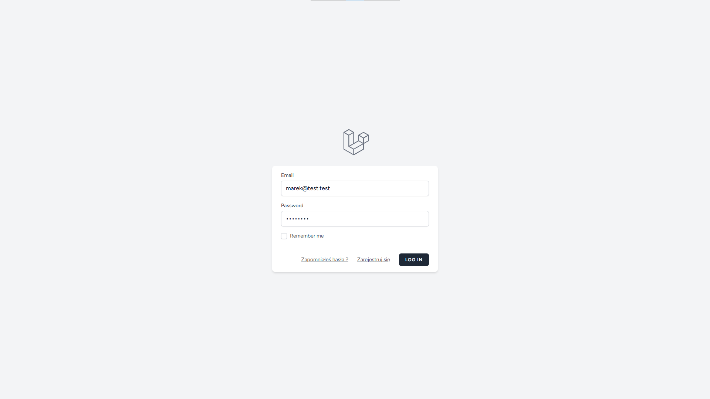

Budżetownik
Aplikacja do zarządzania budżetem domowym zbudowana w Laravel (PHP) z MySQL i Tailwind CSS. Projekt powstał jako powrót do PHP po dłuższej przerwie oraz sposób na naukę frameworka Laravel w praktyce poprzez stworzenie kompletnej, nowoczesnej aplikacji.
- Laravel
- PHP
- Blade
- Tailwind CSS
- Vite
- MySQL
- Chart.js
- Laravel Breeze
- Integracja z MockBank API
Możliwości aplikacji
Budżetownik pozwala w prosty sposób zarządzać finansami — dodawać i przeglądać transakcje, tworzyć własne kategorie z kolorami, filtrować dane oraz śledzić kluczowe wskaźniki w panelu głównym.
Aplikacja umożliwia zestawienie przychodów i wydatków w ujęciu miesięcznym oraz wizualizację danych na interaktywnych wykresach (Chart.js). Kolory kategorii są automatycznie przenoszone na wykresy, co ułatwia analizę i zachowuje spójność wizualną.
Użytkownik może dowolnie filtrować dane według okresu, kategorii lub typu transakcji, korzystać z wyszukiwarki i sortowania, a także w prosty sposób edytować lub usuwać wpisy. System obsługuje zarówno transakcje ręczne, jak i te importowane z zewnętrznych źródeł.
Architektura i UX
Backend zbudowano w Laravel z wykorzystaniem Eloquent ORM, kontrolerów REST oraz requestów z walidacją. Warstwa widoków oparta jest o Blade i Tailwind CSS (utility-first), a zasoby kompilowane są przy pomocy Vite.
Aplikacja została zaprojektowana w duchu prostoty i czytelności — interfejs jest lekki, nowoczesny i przygotowany na dalszy rozwój, np. wdrożenie budżetów miesięcznych, rozszerzeń analitycznych lub integracji z innymi bankami.
System logowania i rejestracji oparty jest o Laravel Breeze. Zastosowano spójny układ i ergonomiczne komponenty interfejsu, dzięki czemu użytkownik może zarządzać finansami szybko i intuicyjnie.
Zajrzyj do środka aplikacji
Ekran logowania do aplikacji
Integracja z MockBank API
Budżetownik współpracuje z moim projektem MockBank API, z którego pobiera transakcje bankowe. Wystarczy podać identyfikator Owner (email / prefix / ObjectId), a aplikacja pobiera dane z użyciem globalnego API key.
System rozróżnia źródło każdej operacji (Bank / Ręczne) oraz stosuje auto-kategoryzację na podstawie reguł i presetów. Jeśli opis nie pasuje do znanych kategorii, transakcja trafia do sekcji Nieskategoryzowane, skąd użytkownik może ją łatwo przypisać.
Funkcje w skrócie
- KPI: Przychody, Wydatki, Bilans miesięczny
- Wykresy kategorii (Chart.js) z kolorami zdefiniowanymi w UI
- Filtry: okres, kategoria, typ, źródło + wyszukiwarka
- Szybkie dodawanie / edycja / usuwanie transakcji
- Dane demo do testowania interfejsu
Pomysły na rozwój:
- Synchronizacja w czasie rzeczywistym
- Obsługa wielu banków i kont jednocześnie
- Wsparcie dla multiwalut — planowane rozszerzenie API
- Budżety miesięczne i limity dla kategorii
- Raporty roczne oraz eksport danych